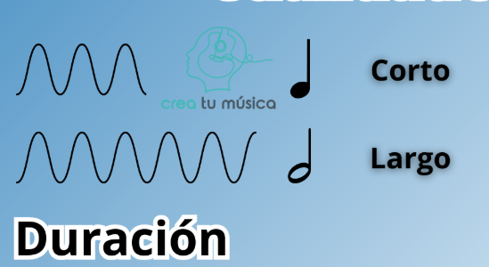

Se refiere al tiempo que una nota o silencio se mantiene y se representa mediante figuras rítmicas como la redonda, blanca, negra, corchea, entre otras, ya que los únicos instrumentos acústicos que mantienen los sonidos el tiempo que quieran, son los de cuerda con arco, como el violín; los de viento dependen de la capacidad pulmonar, y los de percusión de los golpes (Meimije, 2024).